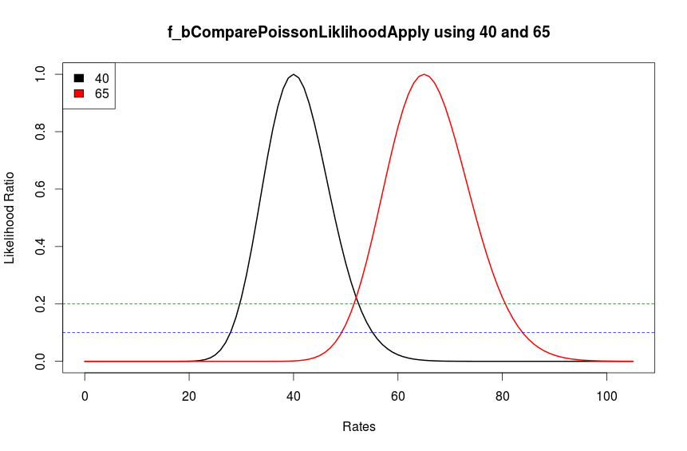

dismiss
Quick Reference
Dismiss is a collection of functions implemented in R and require the following to be present on the system:
- I. R (version 3.1.2)
- II. Bioconductor , (version 3.0) with packages
- A. GenomicAlignments
- B. GenomicFeatures
- C. rtracklayer
To run dismiss, the following files should be in the current path or directory:
- I. dismiss_header.R (the script with all the required functions)
- II. dismiss_macs2_extractor.R (utility script to process MACS2 results)
- III. Tab separated xls results file for methylated regions for peak calling performed by MACS2.
- IV. Alignment file in .bam format (the same file used to perform peak calling)
- V. Bam index file with .bai extension (if bam file is called file.bam then index file should be called file.bam.bai)
In order to simplify the process of strand separation, a utility script dismiss_macs2_extractor.R has been provided to perform strand separation on peak calling performed on MeDIP-Seq alignment data using MACS2. The script can be run from the command line, provided the above mentioned conditions are met.
Rscript dismiss_macs2_extractor.R MACS2_result.xls File.bam [p or s]
where the last argument is essential and should be set to either
- p = for paired end data OR
- s = for single end data
The functions provided with the script dismiss_header.R can be used directly in one’s own R scripts, and strand separation performed on ranged data of GRanges object type. This ranged data would have been produced by a MeDIP-Seq analysis software of choice e.g. MEDIPS , MACS2 etc. (see section 2.3 for description of the function to call)
Outputs:
The script dismiss_macs2_extractor.R will produce four output files with the current time and date added as postfix to the names:
- 1. oGRdismiss_[time.date].rds
An R object of class GRanges, that has a double, plus or minus strand assigned to each peak region and can be used in one’s own scripts for further processing. - 2. oGRdismiss_[time.date]_double_st.gff3
- 3. oGRdismiss_[time.date]_minus_st.gff3
- 4. oGRdismiss_[time.date]_plus_st.gff3
The three .gff3 format files contains methylated regions separated into double, minus and plus stranded parts. These files can easily be imported into genome browsers as tracks for analysis or converted to other suitable formats for further processing.
GFF3 file additional information:
The following additional information is present for each record entry in the gff3 file. Values 1 to 4 are the ones provided by MACS2 in the original results.
- 1. abs_summit = coordinates for the absolute peak summit originally provided by MACS2.
- 2. pileup = read pileup calculated by MACS2.
- 3. fold_enrichment = log fold enrichment of the current peak compared to background - see MACS2 manual for details of this variable
- 4. neg.log10.qval = Adjusted p.values (qvalues) after multiple testing correction for each peak provided by MACS2 on -1 X log10(qvalue) scale.
- 5. Additional 7 calculated values by dismiss - see section 2.3.2, point number 7 for details of each variable.
2.0 General Information
2.1 What is DISMISS
DISMISS, which as an additional step in MeDIP-Seq data analysis workflow, enables the allocation of strands to methylated DNA regions. It does this by analyzing analysing the proportions of of first mate read aligning to the methylated locus from the plus and minus strands.
2.2 Installation notes
DISMISS uses the base R package and Bioconductor libraries. R (version 3.1.2) can be installed by visiting http://cran.r-project.org/. Once R has been installed, then Bioconductor (version 3.0) can be installed directly (http://www.bioconductor.org/install/) through R by typing:
source("http://bioconductor.org/biocLite.R")
biocLite()
The bioconductor packages GenomicAlignments, GenomicFeatures and rtracklayer can each be installed after these steps by typing e.g.
biocLite("GenomicAlignments")
2.3 How does it work
DISMISS can be used in two ways: 1) a more simplified script that processes results from MACS2 and outputs results as an R object and gff3 files - using dismiss_macs2_extractor.R; 2) a more involved method where the functions can be called directly in R.
2.3.1 Simple method.
This method involves a call to the script dimiss_macs2_extractor.R which performs the following steps:
- Process command line arguments by setting variables
- macs = name of the MACS2 results excel file.
- bam = name of the MeDIP-Seq alignment file in bam format
- paired = TRUE; if the command line argument was p or else s
- Source the main script with all functions dismiss_header.R
- Set the Genomic Ranges object oGRdismiss
- Call function f_oGRMACS2toGRanges with argument macs, to convert tab separated ranged data into a GRanges object oGRdismiss
- Separate the strands by calling the function f_oGRSeparateStrands with arguments oGRdismiss, bam and paired variables.
- Save the output as three gff3 files and an R object containing oGRdismiss object.
2.3.2 Involved method.
This is recommended for users who are more familiar with R, and would like to produce Genomic Ranges objects themselves. It is assumed that these Genomic Ranges objects are ranges over the genome where methylated signal is present. This method involves the use of the function f_oGRSeparateStrands. Each of the functions used here are described in more detail later in section 3.
- 1. Call the function with arguments
- 1.1. oGRsignal.strand = a GRanges object that has the strand value set to * (i.e. double stranded).
- 1.2. csFile = a character string with the name of the bam file e.g. infile.bam
- 1.2.1. the function assumes that there is a bam index file infile.bam.bai in the same directory
- 1.3. bPaired = a boolean (TRUE/FALSE) variable - if the data is paired end or single end.
- 2. Count the first mate reads aligning to each range/region in the GRanges object, in a matrix called mFirstMate.
mFirstMate = f_mFastCountMateReadsOverRanges(oGRsignal.strand, bam.file = csFile, bPaired) - 3. Using the mFirstMate matrix, apply the function over each row of the matrix, to check if the first mate reads from the plus (mp) and minus (mm) strands are equal under a poisson likelihood.
t = apply(mFirstMate[,c('mp', 'mm')], 1, f_bComparePoissonLiklihoodApply) - 4. The function
f_bComparePoissonLiklihoodApplywill fit a likelihood function on the two values'mp','mm'for each row inmFirstMate. - 5. The variable
treturned byf_bComparePoissonLiklihoodApplyis an array of boolean values TRUE/FALSE of length equal to the number of rows in mFirstMate, with a TRUE if the two read counts on the plus and minus sides are equal or else: - 5.1. Assign the peak range to plus if
mFirstMate[i,'mp'] > mFirstMate[i,'mm']. - 5.2. Else assign to minus strand.
- 6. Set the strand value for each GRanges index to *, + or - depending on the results from step 5.
- 7. Add some additional information to the mcols data of oGRsignal.strand
- 7.1. strand_fac = 2 (both), 1 (plus), 0 (minus) - factor variable to represent strands
- 7.2. mp = first mate reads from plus strand
- 7.3. mm = first mate reads from minus strand
- 7.4. bp = both plus, reads from first and second mate on plus strand
- 7.5. bm = both minus, reads from first and second mate on minus strand
- 7.5.1. bp and bm are the same as mp and mm in case of single end reads
- 7.6. p.plus = binomial probability of fraction of reads from mp
- 7.7. p.minus = binomial probability of fraction of reads from mm
- 7.7.1. calculated as:
- 8. Other variables associated with mcols data are values already included in the oGRsignal.strand data structure by the user.
mp = mFirstMate[,'mp'] + 1 # add a one to avoid divisions by zeromm = mFirstMate[,'mm'] + 1n = mp + mmp.plus = mp/np.minus = 1-p.plus3.0 Functions
3.1 f_bComparePoissonLiklihoodApply
f_bComparePoissonLiklihoodApply = function(ivVector, cutoff=0.2)
ivVector = integer vector of size 2 where each value represents the first mate read count from the plus and minus strands
cutoff = cutoff value for the likelihood ratio. Default value used is 0.2
Description:The function takes two values in a vector form and checks if the the two values are equal under a poisson distribution.
Rets:Returns true if the two values are equal.
Figure 1: The figure shows a likelihood ratio plots of two read counts 40 (plus strand) and 65 (minus strand). The black line shows the plausible values of rates if the poisson rate is 40 and the red line shows plausible values of 65. The dotted blue and green lines show slices through the likelihood function i.e. the cutoff values. At a cutoff of 0.2 the two rates 40 and 65 are marginally equal and at a cutoff above this, the two rates will not be considered equal. However at a cutoff of 0.1 (blue dotted line) the two rates can be considered equal under a poisson distribution.
Considering Figure 1, the cutoff value can be changed according to the nature of the data sets. In our tests, a cutoff value of 0.2 (default value) gave good matches with BS-Seq data. This value can be adjusted based on the sequencing depth - if the sequencing was done deep enough then there will be good separation between signal and noise channels and a lower threshold may give good separation, and where sequencing depth is not enough then a threshold of 0.3 or higher may be more appropriate. However a relationship between the threshold cutoff and sequencing depth is an open question, and has not been explored in detail.
3.2 f_mFastCountMateReadsOverRanges
f_mFastCountMateReadsOverRanges = function(gr.signal, bam.file, bPaired=T)
gr.signal = Genomic Ranges object of class GRanges, which would be a set of ranges with strand value *, over which counting is done
bam.file = alignment file in bam format, expects the bam index file with same name and .bai extension in the directory
bPaired = T - boolean value, set true if paired end or else set false for single end reads
Description:It uses a GRanges object (typically calculated by a peak caller e.g. MACS) and using the alignment data, creates a matrix that contains first mate reads from plus and minus strands (mp, mm) and number of reads from both mates (bp, bm). For single end data both mp = bp and mm = bm.
Rets:Returns a matrix with count data
mRets = matrix(NA, nrow=length(gr.signal), ncol=4, dimnames=list(NULL, c('mp', 'mm', 'bp', 'bm')))
3.3 f_oGRSeparateStrands
Main function that performs strand separation, and uses functions in sections 3.1 and 3.2 to perform these tasks. The details of the function are explained in section 2.3.2.